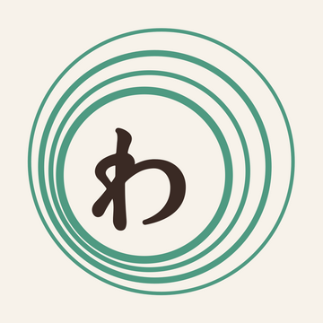

いつもの道に、寄り道をひとつ。
ひばりヶ丘の、
暮らしのそばにあるお店です。
焼きたてのパン屋さんに、お菓子屋さん、かばん屋さんまで。
いつもの買い物の途中に、ふらりと寄れる場所ばかりです。
紹介文は、お店の方それぞれの言葉で。
月に一度、更新されます。
気になるお店があれば、ぜひ足を運んでみてください。
ぐるりのコンセプトを読むお店をさがす
お店の情報を読み込んでいます…
この組み合わせのお店は、まだありません。
街のお気に入りが、もっと見つかるように。
ぐるりには、これからもすてきなお店が次々と加わっていく予定です。
最新のお知らせは、Instagramから受け取れます。
Instagramをフォローする
人と技に目を向けたページ「わざのひと」
ぐるりは、人と地域に目を向けたページです。人と技に目を向けたページが、「わざのひと」です。ひとつの技を長く磨いてきた方たちを、その技とともに紹介しています。